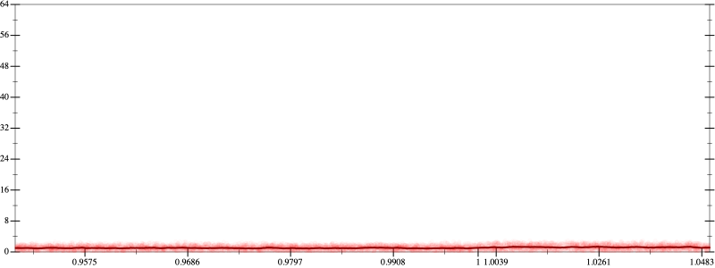
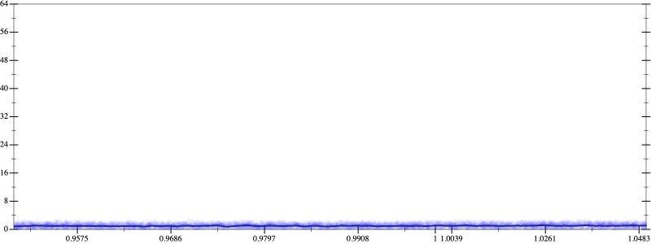
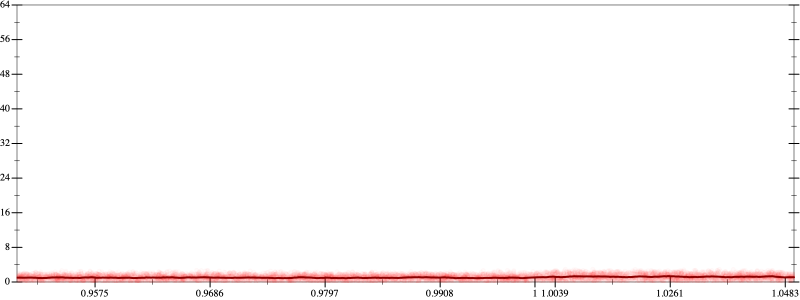
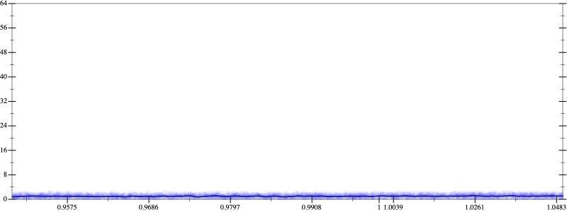

Initial program 1.1
\[\left(\left(\left(1.0 + -4.0 \cdot x\right) + 3.0 \cdot \left(x \cdot x\right)\right) + -0.666667 \cdot \left(\left(x \cdot x\right) \cdot x\right)\right) + 0.041667 \cdot \left(\left(\left(x \cdot x\right) \cdot x\right) \cdot x\right)\]
- Using strategy
rm Applied associate-+l+1.1
\[\leadsto \left(\color{blue}{\left(1.0 + \left(-4.0 \cdot x + 3.0 \cdot \left(x \cdot x\right)\right)\right)} + -0.666667 \cdot \left(\left(x \cdot x\right) \cdot x\right)\right) + 0.041667 \cdot \left(\left(\left(x \cdot x\right) \cdot x\right) \cdot x\right)\]
Applied simplify1.0
\[\leadsto \left(\left(1.0 + \color{blue}{\left(-4.0 + 3.0 \cdot x\right) \cdot x}\right) + -0.666667 \cdot \left(\left(x \cdot x\right) \cdot x\right)\right) + 0.041667 \cdot \left(\left(\left(x \cdot x\right) \cdot x\right) \cdot x\right)\]
- Using strategy
rm Applied associate-+l+1.1
\[\leadsto \color{blue}{\left(1.0 + \left(\left(-4.0 + 3.0 \cdot x\right) \cdot x + -0.666667 \cdot \left(\left(x \cdot x\right) \cdot x\right)\right)\right)} + 0.041667 \cdot \left(\left(\left(x \cdot x\right) \cdot x\right) \cdot x\right)\]
Applied simplify1.1
\[\leadsto \left(1.0 + \color{blue}{x \cdot \left(\left(x \cdot 3.0 + -4.0\right) + x \cdot \left(x \cdot -0.666667\right)\right)}\right) + 0.041667 \cdot \left(\left(\left(x \cdot x\right) \cdot x\right) \cdot x\right)\]
- Using strategy
rm Applied add-cbrt-cube1.1
\[\leadsto \color{blue}{\sqrt[3]{\left(\left(1.0 + x \cdot \left(\left(x \cdot 3.0 + -4.0\right) + x \cdot \left(x \cdot -0.666667\right)\right)\right) \cdot \left(1.0 + x \cdot \left(\left(x \cdot 3.0 + -4.0\right) + x \cdot \left(x \cdot -0.666667\right)\right)\right)\right) \cdot \left(1.0 + x \cdot \left(\left(x \cdot 3.0 + -4.0\right) + x \cdot \left(x \cdot -0.666667\right)\right)\right)}} + 0.041667 \cdot \left(\left(\left(x \cdot x\right) \cdot x\right) \cdot x\right)\]
Applied simplify1.0
\[\leadsto \sqrt[3]{\color{blue}{{\left(\left(1.0 + \left(x \cdot x\right) \cdot \left(-0.666667 \cdot x\right)\right) + \left(3.0 \cdot x + -4.0\right) \cdot x\right)}^{3}}} + 0.041667 \cdot \left(\left(\left(x \cdot x\right) \cdot x\right) \cdot x\right)\]
 
